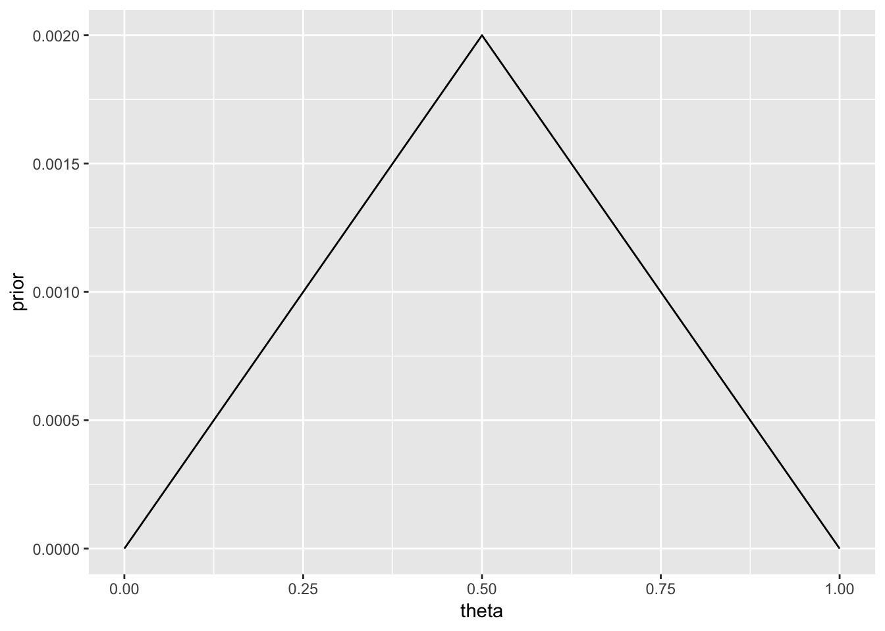
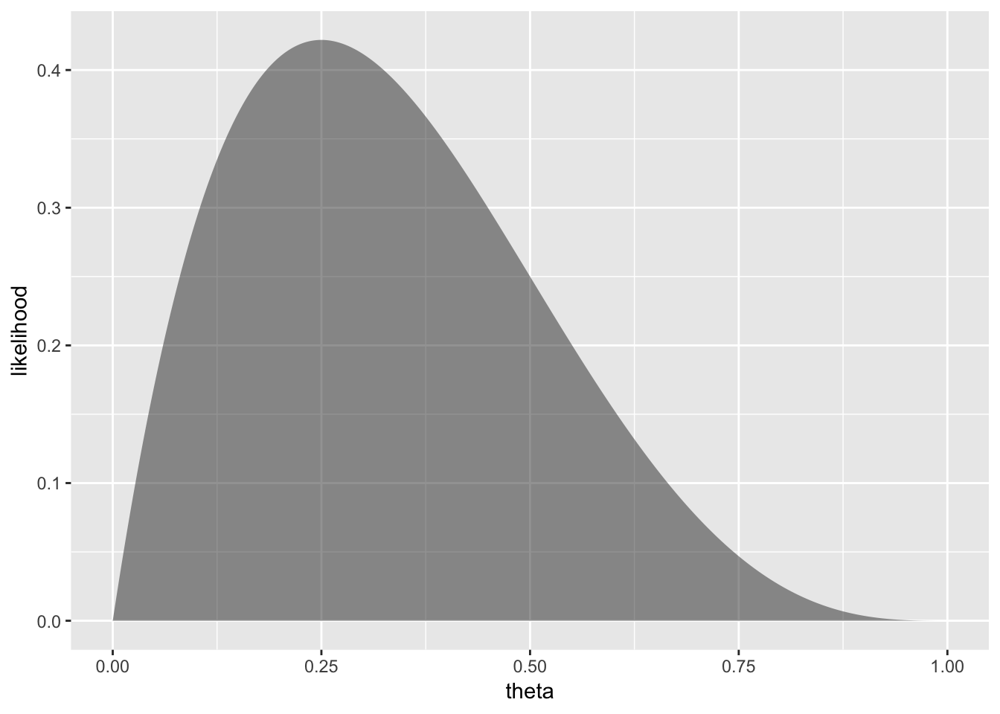

5 Bayes’ Rule
5.1 Estimating the bias in a coin using the Grid Method
library(purrr)
x <- 1; n <- 4
CoinsGrid <-
expand.grid(
theta = seq(0, 1, by = 0.001)
) %>%
mutate(
prior = pmin(theta, 1 - theta), # higher if farther from edges
prior = prior / sum(prior),
likelihood = map_dbl(theta, ~ dbinom(x = x, size = n, .x)),
posterior = prior * likelihood,
posterior = posterior / sum(posterior)
)
gf_line(prior ~ theta, data = CoinsGrid)


